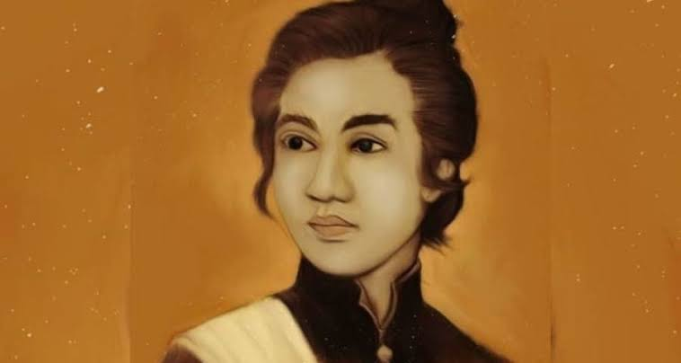

Aceh adalah salah satu daerah besar di Pulau Sumatera Utara. Pulau ini jugalah adalah salah satu pulau di Indonesia yang merupakan pulau yang kaya dengan sumber daya alamnya, banyak keindahan alam, seperti Pulau Weh dan Pantai Iboih (Sabang) dan ditambah banyak tambang besar yang ada disana. Daerah aceh juga merupakan daerah dengan tempat yang mayoritas nya Islam.
Namun siapa yang menduga dibalik semua hal luar biasa itu, tersembunyi perjuangan keras dari para rakyat daerah Aceh, untuk mempertahankan semua itu.
Terlebihnya pada saat kerajaan Aceh masih berdiri indah nan megah. Pada tahun 1904, Kerajaan Aceh ini jatuh ke tangan Belanda sebagai imbas dari Perang Aceh. Perang Aceh merupakan perang antara rakyat Aceh melawan militer Belanda yang terjadi dari tahun 1873 sampai dengan 1904.
Tokoh dan Lokasi
Perang Aceh melibatkan integrasi total dari berbagai lapisan masyarakat yang digerakkan oleh koalisi erat antara tokoh kesultanan, bangsawan (uleebalang), dan ulama kharismatik. Tokoh-tokoh pejuang terkemuka seperti Cut Nyak Dien, Teuku Umar, Teuku Chik di Tiro, dan Teuku Cut Ali menjadi motor penggerak utama yang berhasil memobilisasi massa rakyat sipil untuk angkat senjata. Kepemimpinan yang solid di antara para tokoh ini membuat barisan komando perjuangan rakyat Aceh menjadi sangat tangguh dan disegani oleh divisi militer benteng pertahanan Belanda.
Pertempuran sengit ini berlangsung di medan yang sangat luas, membentang dari pusat kota hingga ke benteng-benteng alam di pelosok daerah. Episentrum agresi militer pertama Belanda berpusat di Kutaraja (Banda Aceh) sebagai upaya perebutan kedaulatan utama atas istana Kesultanan Aceh Darussalam. Ketika wilayah kota mulai jatuh ke tangan lawan, basis perjuangan segera dialihkan ke Wilayah VI Mukim, Pidie, dan Keumala sebagai ibu kota darurat, hingga meluas ke kawasan pantai, rawa-rawa, serta lereng pedalaman Aceh Barat yang dipenuhi semak belukar lebat.

Latar Belakang dan Faktor
Terjadinya Perang Aceh dipengaruhi oleh persilangan faktor geopolitik global dan ambisi ekonomi kolonial yang ingin menguasai komoditas berharga di pasar dunia. Secara umum, wilayah Kesultanan Aceh dikenal memiliki kekayaan hasil bumi bernilai tinggi seperti lada dan rempah-rempah yang sangat diincar oleh pasar internasional. Terlebih lagi, setelah dibukanya Terusan Suez, letak geografis Aceh menjadi sangat strategis di jalur pelayaran global, memicu ambisi besar pemerintah Hindia Belanda untuk memonopoli jalur perdagangan dan memperluas imperium kolonialnya.
Secara khusus, konflik bersenjata ini meletus akibat adanya tindakan sepihak dari Belanda yang melanggar kedaulatan wilayah dan nekat melancarkan serangan militer langsung ke jantung pemerintahan Aceh. Faktor eksternal ini kemudian berbenturan dengan kondisi internal masyarakat Aceh yang memiliki nilai keagamaan Islam sangat kuat di bawah bimbingan kaum ulama. Kedatangan pasukan kolonial dipandang sebagai ancaman nyata terhadap eksistensi agama dan budaya lokal, sehingga melahirkan kesadaran kolektif seluruh elemen rakyat untuk bersatu mempertahankan tanah air.
Proses Perlawanan
Terjadinya Perang Aceh dipengaruhi oleh persilangan faktor geopolitik global dan ambisi ekonomi kolonial yang ingin menguasai komoditas berharga di pasar dunia. Secara umum, wilayah Kesultanan Aceh dikenal memiliki kekayaan hasil bumi bernilai tinggi seperti lada dan rempah-rempah yang sangat diincar oleh pasar internasional. Terlebih lagi, setelah dibukanya Terusan Suez, letak geografis Aceh menjadi sangat strategis di jalur pelayaran global, memicu ambisi besar pemerintah Hindia Belanda untuk memonopoli jalur perdagangan dan memperluas imperium kolonialnya.
Secara khusus, konflik bersenjata ini meletus akibat adanya tindakan sepihak dari Belanda yang melanggar kedaulatan wilayah dan nekat melancarkan serangan militer langsung ke jantung pemerintahan Aceh. Faktor eksternal ini kemudian berbenturan dengan kondisi internal masyarakat Aceh yang memiliki nilai keagamaan Islam sangat kuat di bawah bimbingan kaum ulama. Kedatangan pasukan kolonial dipandang sebagai ancaman nyata terhadap eksistensi agama dan budaya lokal, sehingga melahirkan kesadaran kolektif seluruh elemen rakyat untuk bersatu mempertahankan tanah air
Dampak
Konflik berkepanjangan selama hampir empat dekade ini menyisakan konsekuensi yang sangat mendalam dan merugikan bagi kedua belah pihak yang bertikai. Bagi masyarakat Aceh, perang ini mengakibatkan kehancuran fisik infrastruktur publik secara masif, terkurasnya harta benda, serta lumpuhnya stabilitas ekonomi makro di seluruh wilayah kesultanan. Selain menyisakan trauma sosial yang mendalam akibat jatuhnya korban jiwa dalam jumlah besar, peperangan yang berlarut-larut ini juga memaksa Belanda mengeluarkan dana yang sangat besar hingga menguras kas keuangan negara mereka.
Di sisi lain, penerapan taktik pecah belah (divide et impera) serta siasat pasifikasi administrasi Belanda memicu polarisasi internal dalam struktur sosial masyarakat setempat. Kondisi ini melahirkan ketegangan politik jangka panjang antara kelompok ulama yang konsisten bertahan di garis perjuangan fisik dengan sebagian golongan bangsawan (uleebalang) yang mulai terpengaruh dan terintegrasi ke dalam sistem birokrasi kolonial. Kendati demikian, peninggalan benteng-benteng pertahanan sejarah di Aceh tetap menjadi simbol abadi dari salah satu perlawanan militer paling berat yang pernah dihadapi Belanda.
Sumber Jurnal
- Soraya, S. K., Samingan, & Roe, Y. T. 2021. Cut Nyak Dien: Ratu Perang Aceh dalam Melawan Pemerintah Kolonial Belanda Tahun 1878-1908. Sajaratun: Jurnal Sejarah dan Pembelajaran Sejarah, 6(2), 154-165.
- Putro, A. S. 2024. Perang Aceh Perlawanan terhadap Kolonialisasi Belanda: Dampak dan Peninggalannya. Jurnal Pendidikan Sejarah dan Geografi (PSG), 7(1), 12-25.
- Firmansyah, A. 2022. Dutch Strategy in West Aceh (Aceh War, 1873-1912). Santhet: Jurnal Sejarah, Pendidikan, dan Humaniora, 6(1), 45-56.